Season 1 archive · Go to active Season 2 →
← All players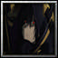
Player profile
aony
Rank #79server.eurobattle.netSeason 1
Most played · Shadow
Matches6710 wins · 57 losses
Win rate15%
Avg K / D / A22.0 / 43.4 / 11.0
Avg APM143
Avg damage dealt155.1k
Avg damage taken155.3k
Heroes played
Explore heroes →| HERO | MATCHES | WIN RATE | AVG K / D / A | AVG DMG |
|---|---|---|---|---|
ShadowMost played | 8 | 0% | 20.1 / 39.8 / 8.9 | 178.4k |
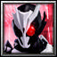 仮面ライダーアークワン | 5 | 20% | 26.4 / 45.0 / 13.2 | 185.7k |
仮面ライダーエボルブラックホールフォーム | 5 | 0% | 21.2 / 33.8 / 8.8 | 139.3k |
Ragna | 5 | 0% | 20.2 / 41.2 / 11.0 | 165.8k |
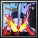 Kamiyama Touma | 4 | 0% | 18.5 / 38.2 / 8.5 | 131.2k |
千子村正 | 3 | 33% | 23.7 / 43.7 / 10.0 | 166.0k |
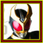 仮面ライダーアギト | 3 | 33% | 30.7 / 43.0 / 13.0 | 170.2k |
仮面ライダーカブト | 2 | 100% | 29.0 / 46.0 / 14.5 | 136.5k |
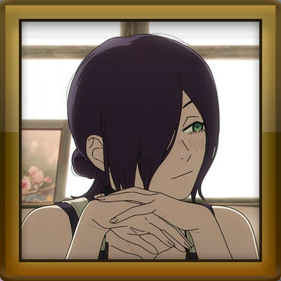 レゼ | 2 | 0% | 20.5 / 51.0 / 12.0 | 192.1k |
V バージルースパーダの息子 | 2 | 0% | 11.5 / 40.5 / 10.0 | 106.3k |
ユーハバッハ | 2 | 0% | 24.0 / 44.5 / 7.5 | 135.4k |
The One Who Stands Above All | 1 | 100% | 21.0 / 29.0 / 18.0 | 156.0k |
Itsuka Kotori | 1 | 100% | 35.0 / 38.0 / 10.0 | 282.3k |
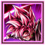 ゴクウブラック | 1 | 100% | 37.0 / 57.0 / 12.0 | 205.5k |
White Princess of the True Ancestors | 1 | 0% | 25.0 / 51.0 / 14.0 | 199.4k |
朝田 詩乃 | 1 | 0% | 33.0 / 51.0 / 16.0 | 249.0k |
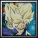 Future トランクス | 1 | 0% | 22.0 / 55.0 / 11.0 | 195.8k |
Ex-Soldier | 1 | 0% | 20.0 / 43.0 / 8.0 | 175.8k |
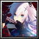 朱雀院 紅葉 | 1 | 0% | 18.0 / 57.0 / 14.0 | 162.9k |
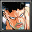 Puri Puri Prisoner | 1 | 0% | 16.0 / 47.0 / 10.0 | 158.9k |
仮面ライダークロノス | 1 | 0% | 19.0 / 33.0 / 7.0 | 98.5k |
Genos | 1 | 0% | 23.0 / 45.0 / 13.0 | 200.2k |
Devil Angel | 1 | 0% | 23.0 / 36.0 / 10.0 | 172.2k |
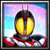 『Codename 555-SB』 | 1 | 0% | 20.0 / 53.0 / 15.0 | 219.3k |
Shin Jinrui Sozo Keikaku Ex | 1 | 0% | 22.0 / 49.0 / 15.0 | 126.8k |
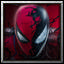 Spider-Man | 1 | 0% | 21.0 / 43.0 / 13.0 | 151.0k |
Kiryuu Sento | 1 | 0% | 17.0 / 53.0 / 10.0 | 94.3k |
【Silver Arbiter】 | 1 | 0% | 24.0 / 48.0 / 14.0 | 136.4k |
ジョルノ | 1 | 0% | 22.0 / 45.0 / 12.0 | 95.0k |
草薙 京 | 1 | 0% | 18.0 / 53.0 / 19.0 | 118.0k |
カルナ | 1 | 0% | 15.0 / 43.0 / 8.0 | 61.9k |
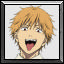 チェンソーマン | 1 | 0% | 17.0 / 47.0 / 9.0 | 76.5k |
仮面ライダータイクーン | 1 | 0% | 23.0 / 41.0 / 20.0 | 89.8k |
平和島 静雄 | 1 | 0% | 19.0 / 45.0 / 11.0 | 77.8k |
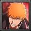 黒崎 一護 | 1 | 0% | 28.0 / 48.0 / 10.0 | 162.8k |
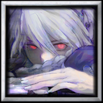 【完全で瀟洒なメイド】 | 1 | 0% | 13.0 / 52.0 / 9.0 | 98.4k |
スパサイヤジンフォルゴジタ | 1 | 0% | 17.0 / 48.0 / 4.0 | 74.8k |
Averages use recorded statistics only; unavailable historical values are shown as —.
Recent matches
Open a match for its scoreboard and kill matchups.
LOSS67:37
MCB #2000136
08 Oct 2026 · 00:32 WIB
25.0 / 51.0 / 14.0View match →
LOSS45:10
MCB #2000135
07 Oct 2026 · 23:22 WIB
14.0 / 34.0 / 4.0View match →
LOSS70:15
MCB #2000128
06 Oct 2026 · 21:21 WIB
30.0 / 50.0 / 10.0View match →
LOSS31:37
MCB #2000126
06 Oct 2026 · 00:07 WIB
19.0 / 47.0 / 7.0View match →
LOSS66:52
MCB #2000124
05 Oct 2026 · 21:38 WIB
19.0 / 52.0 / 9.0View match →
LOSS55:44
MCB #2000120
05 Oct 2026 · 16:56 WIB
8.0 / 44.0 / 12.0View match →
LOSS50:44
MCB #2000112
04 Oct 2026 · 14:46 WIB
17.0 / 42.0 / 13.0View match →
LOSS62:27
MCB #2000111
04 Oct 2026 · 13:49 WIB
33.0 / 51.0 / 16.0View match →
LOSS70:52
MCB #2000108
03 Oct 2026 · 21:42 WIB
19.0 / 38.0 / 8.0View match →
LOSS47:06
MCB #2000107
03 Oct 2026 · 20:16 WIB
8.0 / 38.0 / 10.0View match →